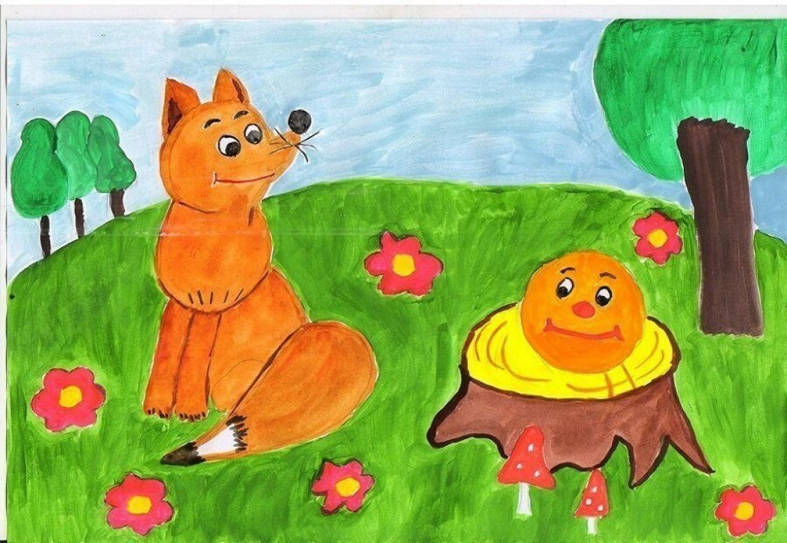

Image from https://xn--80ajjine0d.xn--p1ai/konkurs/materials/moy-lyubimyy-skazochnyy-geroy-0
Название конкурса: «В мире литературных героев»
Номинация:
Рисунок
дошкольники
Ф.И.О. автора: Делимханова Амина Ильясовна
воспитанник
ГСКУ ОСРЦ ДН "Исток"
АСТРАХАНСКАЯ ОБЛАСТЬ
Руководитель работы:
Джумагазиева Фирюза Гарифуллаевна
Воспитатель
Дата публикации:
17 августа, 2021 - 19:39
Диплом Победителя
Оценки экспертов:
90%